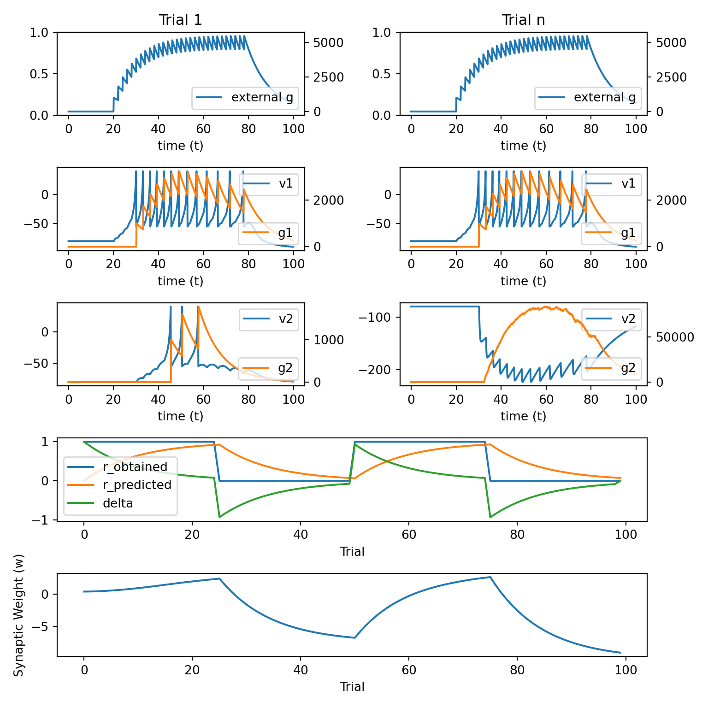

12 Example 1
We will simulate a two neuron network in which neuron 1 projects to neuron 2, the first neuron is driven by an external input, and the connection weight between neuron 1 and neuron 2 is subject to reinforcement learning.
We will use the following
pythoncode based on the previous lecture.The key additions to the code from previous lecture are mostly found in the
update_weight_rl()function.
import numpy as np
import matplotlib.pyplot as plt
import matplotlib.gridspec as gridspec
def init_arrays():
r_predicted = np.zeros(n_trials)
r_obtained = np.zeros(n_trials)
delta = np.zeros(n_trials)
r_obtained[:n_trials // 4] = 1
r_obtained[(2 * n_trials // 4):(3 * n_trials // 4)] = 1
v1 = np.zeros(n)
u1 = np.zeros(n)
g1 = np.zeros(n)
spike1 = np.zeros(n)
v1[0] = vr
v2 = np.zeros(n)
u2 = np.zeros(n)
g2 = np.zeros(n)
spike2 = np.zeros(n)
v2[0] = vr
w_01 = 0.4 * np.ones(n_trials)
w_12 = 0.4 * np.ones(n_trials)
g_record = np.zeros((n_trials, n))
v1_record = np.zeros((n_trials, n))
g1_record = np.zeros((n_trials, n))
v2_record = np.zeros((n_trials, n))
g2_record = np.zeros((n_trials, n))
return {
'r_predicted': r_predicted,
'r_obtained': r_obtained,
'delta': delta,
'v1': v1,
'u1': u1,
'g1': g1,
'spike1': spike1,
'v2': v2,
'u2': u2,
'g2': g2,
'spike2': spike2,
'w_01': w_01,
'w_12': w_12,
'g_record': g_record,
'v1_record': v1_record,
'g1_record': g1_record,
'v2_record': v2_record,
'g2_record': g2_record
}
def plot_results():
fig = plt.figure(figsize=(8, 8))
gs = gridspec.GridSpec(5, 2)
ax00 = fig.add_subplot(gs[0, 0])
ax10 = fig.add_subplot(gs[1, 0])
ax20 = fig.add_subplot(gs[2, 0])
ax01 = fig.add_subplot(gs[0, 1])
ax11 = fig.add_subplot(gs[1, 1])
ax21 = fig.add_subplot(gs[2, 1])
ax3 = fig.add_subplot(gs[3, :])
ax4 = fig.add_subplot(gs[4, :])
ax1 = ax00
ax2 = ax00.twinx()
ax2.plot(t, g_record[0], 'C0', label='external g')
ax2.legend(loc='lower right')
ax1.set_title('Trial 1')
ax1.set_xlabel('time (t)')
ax1 = ax10
ax2 = ax10.twinx()
ax1.plot(t, v1_record[0], 'C0', label='v1')
ax2.plot(t, g1_record[0], 'C1', label='g1')
ax1.legend(loc='upper right')
ax2.legend(loc='lower right')
ax1.set_xlabel('time (t)')
ax1 = ax20
ax2 = ax20.twinx()
ax1.plot(t, v2_record[0], 'C0', label='v2')
ax2.plot(t, g2_record[0], 'C1', label='g2')
ax1.legend(loc='upper right')
ax2.legend(loc='lower right')
ax1.set_xlabel('time (t)')
ax1 = ax01
ax2 = ax01.twinx()
ax2.plot(t, g_record[0], 'C0', label='external g')
ax2.legend(loc='lower right')
ax1.set_title('Trial n')
ax1.set_xlabel('time (t)')
ax1 = ax11
ax2 = ax11.twinx()
ax1.plot(t, v1_record[-2], 'C0', label='v1')
ax2.plot(t, g1_record[-2], 'C1', label='g1')
ax1.legend(loc='upper right')
ax2.legend(loc='lower right')
ax1.set_xlabel('time (t)')
ax1 = ax21
ax2 = ax21.twinx()
ax1.plot(t, v2_record[-2], 'C0', label='v2')
ax2.plot(t, g2_record[-2], 'C1', label='g2')
ax1.legend(loc='upper right')
ax2.legend(loc='lower right')
ax1.set_xlabel('time (t)')
ax3.plot(np.arange(0, n_trials, 1), r_obtained, label='r_obtained')
ax3.plot(np.arange(0, n_trials, 1), r_predicted, label='r_predicted')
ax3.plot(np.arange(0, n_trials, 1), delta, label='delta')
ax3.set_xlabel('Trial')
ax3.set_ylabel('')
ax3.legend()
ax4.plot(np.arange(0, n_trials, 1), w_12)
ax4.set_xlabel('Trial')
ax4.set_ylabel('Synaptic Weight (w)')
plt.tight_layout()
plt.show()
def simulate_network(update_weight_func):
global trl, r_obtained, r_predicted
for j in range(n_trials - 1):
trl = j
for i in range(1, n):
dt = t[i] - t[i - 1]
# external input
dgdt = (-g[i - 1] + psp_amp * spike[i - 1]) / psp_decay
g[i] = g[i - 1] + dgdt * dt
# neuron 1
dvdt1 = (k * (v1[i - 1] - vr) *
(v1[i - 1] - vt) - u1[i - 1] + w_01[trl] * g[i - 1]) / C
dudt1 = a * (b * (v1[i - 1] - vr) - u1[i - 1])
dgdt1 = (-g1[i - 1] + psp_amp * spike1[i - 1]) / psp_decay
v1[i] = v1[i - 1] + dvdt1 * dt
u1[i] = u1[i - 1] + dudt1 * dt
g1[i] = g1[i - 1] + dgdt1 * dt
if v1[i] >= vpeak:
v1[i - 1] = vpeak
v1[i] = c
u1[i] = u1[i] + d
spike1[i] = 1
# neuron 2
dvdt2 = (k * (v2[i - 1] - vr) *
(v2[i - 1] - vt) - u2[i - 1] + w_12[trl] * g1[i - 1]) / C
dudt2 = a * (b * (v2[i - 1] - vr) - u2[i - 1])
dgdt2 = (-g2[i - 1] + psp_amp * spike2[i - 1]) / psp_decay
v2[i] = v2[i - 1] + dvdt2 * dt
u2[i] = u2[i - 1] + dudt2 * dt
g2[i] = g2[i - 1] + dgdt2 * dt
if v2[i] >= vpeak:
v2[i - 1] = vpeak
v2[i] = c
u2[i] = u2[i] + d
spike2[i] = 1
# update synaptic weights
delta_w = update_weight_func()
w_12[trl + 1] = w_12[trl] + delta_w
# store trial info
g_record[trl, :] = g
v1_record[trl, :] = v1
g1_record[trl, :] = g1
v2_record[trl, :] = v2
g2_record[trl, :] = g2
plot_results()
def update_weight_rl():
global trl, r_obtained, r_predicted
delta[trl] = r_obtained[trl] - r_predicted[trl]
r_predicted[trl + 1] = r_predicted[trl] + gamma * delta[trl]
pre = g1.sum()
post = g2.sum()
delta_w = alpha * pre * post * delta[trl]
return delta_w
n_trials = 100
trl = 0
tau = 0.1
T = 100
t = np.arange(0, T, tau)
n = t.shape[0]
C = 50
vr = -80
vt = -25
vpeak = 40
k = 1
a = 0.01
b = -20
c = -55
d = 150
psp_amp = 1e5
psp_decay = 10
g = np.zeros(n)
spike = np.zeros(n)
spike[200:800:20] = 1
alpha = 3e-14
beta = 3e-14
gamma = 0.1
array_dict = init_arrays()
r_predicted = array_dict['r_predicted']
r_obtained = array_dict['r_obtained']
delta = array_dict['delta']
v1 = array_dict['v1']
u1 = array_dict['u1']
g1 = array_dict['g1']
spike1 = array_dict['spike1']
v2 = array_dict['v2']
u2 = array_dict['u2']
g2 = array_dict['g2']
spike2 = array_dict['spike2']
w_01 = array_dict['w_01']
w_12 = array_dict['w_12']
g_record = array_dict['g_record']
v1_record = array_dict['v1_record']
g1_record = array_dict['g1_record']
v2_record = array_dict['v2_record']
g2_record = array_dict['g2_record']
update_weight_func = update_weight_rl
simulate_network(update_weight_func)